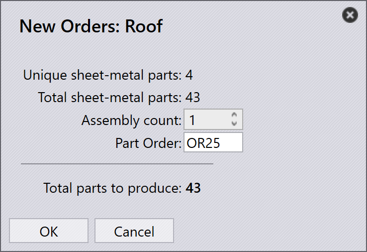

Orders importeren
Orders kunnen worden aangemaakt of geïmporteerd met behulp van de volgende methoden:
-
Orders importeren uit spreadsheetbestanden.
-
Orders automatisch importeren via watch-instellingen.
-
Orders aanmaken vanuit bestaande onderdelen in de onderdelenbibliotheek.
-
Orders aanmaken vanuit assemblage statische nesten.
Orders importeren uit spreadsheet
-
Navigeer naar openen → _Opdrachten importeren….

-
Ondersteunde spreadsheetformaten zijn CSV, XLSX en XML.
-
Selecteer het vereiste spreadsheetbestand en klik op openen.
-
Het importproces is vergelijkbaar met de Job/Assemblage import workflow.

| U kunt de spreadsheet ook rechtstreeks slepen en neerzetten op de Orders-pagina om orders te importeren. |
Orders importeren met watch-instellingen
-
Schakel de optie Spreadsheet importeren uit 'Live map' in bij Instellingen bekijken.
-
Selecteer Opdrachten importeren bij de Spreadsheet importoptie.
-
Configureer de maplocatie van waaruit orders moeten worden geïmporteerd.
-
Het systeem bewaakt de geconfigureerde map continu.
-
Nieuw toegevoegde spreadsheetbestanden worden automatisch geïmporteerd in Orders.

| Raadpleeg voor gedetailleerde configuratiestappen de Watch settings documentatie. |
Orders aanmaken vanuit onderdelenbibliotheek
-
Selecteer de vereiste onderdelen uit de Onderdelenbibliotheek.
-
Klik met de rechtermuisknop en kies Nieuw… → Opdracht om het Nieuwe opdrachten dialoogvenster te openen.

-
Voer de vereiste gegevens in zoals hoeveelheid, vervaldatum en prioriteit.

-
Klik op OK om de orders aan te maken.
-
Het systeem schakelt automatisch over naar de Orders-pagina.
-
Aangemaakte orders worden weergegeven op de Orders Ready-pagina voor het aanmaken van jobs.
Orders aanmaken vanuit assemblage
-
Klik met de rechtermuisknop op de vereiste Assemblage.
-
Selecteer Nieuw… → Opdracht om het Nieuwe opdrachten dialoogvenster te openen.

-
Voer het vereiste Aantal modules in.

-
Klik op OK om de orders aan te maken.